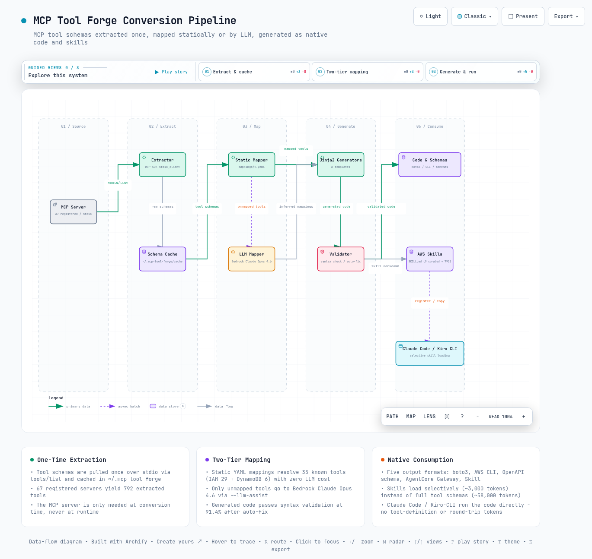

01개요 - MCP Tool Forge란
이 절에서는 MCP Tool Forge가 어떤 도구이고 왜 만들어졌는지 소개합니다. 핵심은 하나입니다. AI가 쓰는 도구를 서버 없이 돌아가는 코드로 바꾸는 것입니다.
MCP Tool Forge는 MCP(Model Context Protocol, AI 에이전트가 외부 도구를 호출하게 해주는 표준 프로토콜) 서버의 도구(Tool)를 추출하는 Python CLI 도구입니다. 추출한 도구는 boto3, AWS CLI, OpenAPI 스키마(Schema), AgentCore Gateway, Claude Code / Kiro-CLI Skill 5가지 형식으로 변환됩니다. 바로 설치해 쓸 수 있는 9개 AWS Skills를 포함하며, Claude Code와 Kiro-CLI를 모두 지원합니다.
용어를 짧게 풀면 이렇습니다. boto3는 AWS를 코드로 다루는 Python 라이브러리이고, OpenAPI 스키마는 도구의 입력과 출력을 기술하는 표준 문서 형식입니다. AgentCore Gateway는 Amazon Bedrock의 도구 게이트웨이 서비스이고, Skill은 에이전트가 필요할 때만 읽어 들이는 마크다운 지침 파일입니다.
이 도구가 존재하는 이유는 MCP의 토큰 비용 구조에 있습니다. MCP 서버를 켜두는 것만으로 모든 도구 정의가 매 대화의 컨텍스트에 실립니다. 그래서 도구를 쓰지 않아도 비용이 발생합니다.
이 문서는 먼저 그 비용을 수치로 확인합니다(2~3장). 이어서 해법인 Skills의 설치와 구성을 다루고(4장), 변환 파이프라인의 동작 방식을 정리합니다(5~7장).
02핵심 문제 - MCP 토큰 비용
이 절에서는 MCP 서버를 켜두기만 해도 왜 비용이 생기는지 살펴봅니다. 비용의 단위는 토큰(LLM이 글을 읽고 쓰는 최소 단위이자 과금 기준)입니다.
2.1 MCP는 왜 토큰을 많이 소모하는가
MCP 프로토콜은 강력하지만, 모든 도구 정의(Tool Definition)와 요청/응답이 LLM 토큰으로 소모됩니다. MCP 서버가 로딩되면 모든 도구의 JSON Schema(도구의 입력과 출력을 기술한 명세)가 LLM 컨텍스트(모델이 대화마다 읽는 입력 전체)에 주입됩니다.
이 주입은 LLM이 어떤 도구를 쓸 수 있는지 "알기 위해" 필요한 과정입니다. 문제는 주입된 도구 대부분이 그 대화에서 사용되지 않는다는 점입니다.
그 비용은 어느 정도일까요? 도구 정의 하나가 약 2,000토큰이므로, IAM MCP 서버 하나를 로딩하면 도구 29개 × 약 2,000토큰 = 약 58,000토큰이 도구 정의만으로 소모됩니다. 여기에 도구를 호출할 때마다 JSON-RPC(원격 함수를 호출하는 메시지 규약) 요청/응답 왕복으로 호출당 약 500토큰이 추가됩니다.
67개 AWS MCP 서버에서 792개 도구를 전부 로딩하면, 792개 × 약 2,000토큰 = 약 1,584,000토큰(약 150만)이 도구 정의만으로 소모됩니다. 도구를 하나도 호출하지 않아도 매 대화마다 발생하는 비용입니다.
2.2 실측 결과 (Kiro-CLI 기준)
이론이 아니라 실측에서는 얼마나 차이가 날까요? 같은 작업을 MCP 서버를 켠 상태와 끈 상태(Skills만 사용)로 각각 실행해 비교했습니다. 비용 단위는 credits(Kiro-CLI의 사용량 과금 단위)입니다.
이 표에서 볼 것은 같은 작업인데도 벌어지는 credits 차이입니다.
| 시나리오 | Credits | 토큰 사용량 |
|---|---|---|
| MCP 서버 4개 ON | 0.71 | 도구 스키마 로딩 + 응답 |
| MCP 서버 4개 OFF (Skills만) | 0.27 | 필요한 스킬만 선택 로딩 |
| 절감률(Savings) | 62% |
2.3 MCP Tool Forge의 해법
해법은 한 번 추출 → 네이티브 코드로 변환 → MCP 없이 직접 실행입니다. MCP 방식은 Agent ↔ MCP Server ↔ AWS API 경로를 매번 거치며 토큰을 소모합니다. Skill 방식은 Agent가 boto3 / CLI 코드를 직접 실행해 AWS API로 가므로, 추가 토큰도 왕복 지연도 없습니다.
이 표에서 볼 것은 토큰, 서버, 지연 시간 항목에서 두 방식이 어떻게 갈리는지입니다.
| 비교 항목 | MCP 방식 | Skill 방식 |
|---|---|---|
| 도구 정의 토큰 | 약 2,000/도구 (매 대화) | 0 (코드에 내장) |
| 요청/응답 토큰 | JSON-RPC 왕복 | 0 (직접 실행) |
| 서버 의존성(Dependency) | 항상 실행 필요 | 불필요 |
| 지연 시간(Latency) | MCP 서버 왕복 | 0 |
| 오프라인(Offline) 동작 | 불가 | 가능 |
03토큰 경제학 - MCP vs Skills
이 절에서는 두 방식의 비용 차이를 토큰 수와 달러 금액으로 비교합니다. 앞 절의 문제가 실제로 얼마짜리인지 확인하는 단계입니다.
3.1 Skills는 어떻게 토큰을 절약하는가
Skills는 필요한 스킬만 선택적으로 로딩(Selective Loading)합니다. 예를 들어 "IAM 사용자 목록 보여줘"라는 요청에서, MCP 방식은 IAM 서버의 29개 도구 스키마 전체(58,000토큰)를 로딩한 뒤 그중 1개만 사용합니다. Skill 방식은 aws-iam의 SKILL.md 1개(약 3,000토큰)만 로딩하고 바로 실행합니다.
이 표에서 볼 것은 초기 로딩 토큰과 호출당 토큰, 그리고 서버 개수의 차이입니다.
| 항목 | MCP (서버 1개) | MCP (67개 전체) | Skill |
|---|---|---|---|
| 초기 로딩(Initial Loading) | 약 58,000토큰 | 약 1,584,000토큰 | 약 3,000토큰 |
| 도구 호출(Per Call) | 약 500토큰/회 | 약 500토큰/회 | 0토큰 |
| 서버 프로세스(Process) | 1개 필요 | 67개 필요 | 0개 |
| 콜드 스타트(Cold Start) | 2~5초 | 30초+ | 0초 |
3.2 비용 환산 (Claude Opus 4.6 기준)
돈으로 환산하면 얼마나 차이가 날까요? 입력 토큰 단가 $15/1M 토큰을 적용해 대화당 비용으로 바꿔 보았습니다. 이 표에서 볼 것은 MCP 서버 개수에 따라 커지는 대화당 비용과 Skill의 비용입니다.
| 시나리오 | 입력 토큰(Input Tokens) | 비용 |
|---|---|---|
| MCP 1개 서버/대화 | 58,000 | $0.87/대화 |
| MCP 10개 서버/대화 | 580,000 | $8.70/대화 |
| Skill 1개/대화 | 3,000 | $0.045/대화 |
| Skill 전체 9개/대화 | 27,000 | $0.41/대화 |
한 문장으로 요약하면, Skill 방식은 MCP 대비 토큰 비용을 95% 이상 절감합니다.
04Skills 설치와 9개 AWS Skills
이 절에서는 함께 제공되는 9개 AWS Skills를 설치하고 쓰는 방법을 다룹니다. 설치는 복사 몇 줄이면 끝나고, 이후에는 평소처럼 말로 요청하면 됩니다.
MCP 서버 설치, Python 패키지(Package), Bedrock 접근이 모두 불필요합니다. AWS 자격 증명(Credentials)만 있으면 바로 사용할 수 있습니다.
4.1 설치 - 3줄이면 끝
저장소를 클론하고 스킬 디렉터리로 복사하면 설치가 끝납니다. Claude Code는 .claude/skills, Kiro-CLI는 .kiro/skills를 씁니다.
# Claude Code
git clone https://github.com/whchoi98/mcp-tool-forge.git
mkdir -p .claude/skills
cp -r mcp-tool-forge/.claude/skills/aws-* .claude/skills/
# Kiro-CLI
mkdir -p .kiro/skills
cp -r mcp-tool-forge/.claude/skills/aws-* .kiro/skills/# Claude Code
mkdir -p ~/.claude/skills
cp -r mcp-tool-forge/.claude/skills/aws-* ~/.claude/skills/
# Kiro-CLI
mkdir -p ~/.kiro/skills
cp -r mcp-tool-forge/.claude/skills/aws-* ~/.kiro/skills/전체가 필요 없으면 특정 스킬 디렉터리만 골라 복사해도 됩니다 (예: aws-iam, aws-cost, aws-network만 설치). 설치 후에는 자연어(평소 쓰는 일상 언어)로 요청하면 스킬이 자동 활성화됩니다.
이 표에서 볼 것은 어떤 요청이 어떤 스킬을 깨우는지의 대응 관계입니다.
| 요청 예시 | 활성화 스킬 |
|---|---|
| "IAM 사용자 목록 보여줘" | aws-iam |
| "이번 달 비용은?" | aws-cost |
| "CloudWatch 알람 확인" | aws-cloudwatch |
| "Lambda 함수 목록" | aws-infra |
| "SQS 큐 목록" | aws-messaging |
| "VPC 네트워크 확인" | aws-network |
| "Bedrock 모델 목록" | aws-ai |
| "DynamoDB 테이블 조회" | aws-data |
| "보안 감사 실행" | aws-security |
4.2 9개 스킬 구성
9개 스킬은 각각 하나의 AWS 관리 영역을 맡습니다. 이 표에서 볼 것은 스킬별 담당 영역과 대표 작업입니다.
| 스킬(Skill) | 트리거(Trigger) | 주요 작업(Operations) |
|---|---|---|
| aws-iam | "IAM 사용자/역할/정책" | list_users, create_role, attach_policy, simulate_policy |
| aws-cloudwatch | "로그/메트릭/알람/감사" | Logs Insights, get_metric_data, describe_alarms, CloudTrail |
| aws-cost | "비용/청구/가격" | get_cost_and_usage, cost_forecast, pricing lookup |
| aws-infra | "리소스/스택/컨테이너" | Cloud Control API, CloudFormation, EKS, ECS, Lambda |
| aws-messaging | "큐/토픽/메시지/워크플로" | SNS publish, SQS send/receive, MQ, Step Functions |
| aws-network | "VPC/서브넷/TGW/VPN" | VPC, Transit Gateway, Cloud WAN, Network Firewall, VPN, Flow Logs |
| aws-ai | "Bedrock/SageMaker/Kendra" | Bedrock Converse, Knowledge Bases, Agents, SageMaker, Kendra, Q Business |
| aws-data | "DB/캐시/쿼리" | DynamoDB, Aurora, Redshift, ElastiCache, Neptune |
| aws-security | "계정/자격증명/보안감사" | get_caller_identity, credential audit, MFA check |
4.3 커버리지(Coverage)
9개 스킬로 기존 MCP 서버를 얼마나 대체할 수 있을까요? 9개 수동 스킬은 67개 MCP 서버 중 52개(78%)를 커버합니다. 나머지 15개는 특정 AWS 서비스가 아니거나 전문 영역이라 수동 스킬 대상에서 제외되었습니다.
이 표에서 볼 것은 제외된 15개 서버가 어느 카테고리이고 왜 빠졌는지입니다.
| 카테고리 | 미커버 서버 | 사유 |
|---|---|---|
| Core / Essential | aws-api, core-mcp, aws-mcp | MCP 프록시(Proxy)/플래닝(Planning) - 특정 서비스가 아님 |
| Documentation | aws-documentation, aws-knowledge | 문서 검색 전용 - boto3/CLI 대상 아님 |
| Developer Tools | aws-diagram, aws-msk, code-doc-gen, frontend, git-repo-research, synthetic-data | 개발 도구 (다이어그램, Kafka, 코드 문서화 등) |
| Healthcare | aws-healthomics, healthimaging, healthlake | 헬스케어(Healthcare) 전문 서비스 |
| Cost & Operations | aws-managed-prometheus | Prometheus 모니터링(Monitoring) |
미커버 서버의 도구도 mcp-tool-forge convert로 자동 생성된 792개 개별 스킬을 통해 사용할 수 있습니다.
4.4 테스트 결과(Test Results)
실제 계정에서도 제대로 동작할까요? 실제 AWS 계정(서울 리전, IAM 역할 인증)에서 9개 스킬을 17개 항목으로 테스트해 17/17 통과했습니다. 모든 스킬이 표준 AWS 자격 증명만으로 동작합니다.
이 표에서 볼 것은 스킬별 테스트 항목과 각 항목의 통과 여부입니다.
| # | 스킬 | 테스트 | 결과 |
|---|---|---|---|
| 1 | aws-security | sts get-caller-identity | OK |
| 2 | aws-iam | list-users | OK (2 users) |
| 3 | aws-iam | list-roles | OK (13 roles) |
| 4 | aws-cloudwatch | describe-log-groups | OK |
| 5 | aws-cloudwatch | describe-alarms | OK |
| 6 | aws-infra | Cloud Control EC2 | OK |
| 7 | aws-infra | Cloud Control S3 | OK (1 bucket) |
| 8 | aws-infra | CloudFormation stacks | OK |
| 9 | aws-cost | get-cost-and-usage | OK ($1,093) |
| 10 | aws-cost | Cost by service (top 5) | OK |
| 11 | aws-security | MFA check (boto3) | OK (2 NO MFA) |
| 12 | aws-security | Access key age (boto3) | OK (23 days) |
| 13 | aws-security | Account summary (boto3) | OK (Root MFA: NO) |
| 14 | aws-messaging | SNS topics | OK |
| 15 | aws-messaging | SQS queues | OK |
| 16 | aws-data | DynamoDB tables | OK |
| 17 | aws-infra | Lambda functions | OK |
05아키텍처 - 3단계 변환 파이프라인
이 절에서는 도구가 실제로 어떤 과정을 거쳐 코드로 바뀌는지 살펴봅니다. 변환은 스키마 추출, 정적 매핑, LLM 추론(모델에게 매핑을 추측하게 하는 단계)의 3단계로 진행됩니다. 마지막에 Jinja2(템플릿으로 코드를 찍어내는 Python 라이브러리) 생성기(Generator)가 5가지 형식의 코드를 만들어냅니다.
- 추출(Extract) - MCP SDK stdio_client(표준 입출력으로 서버 프로세스와 통신하는 클라이언트)로 서버에 연결하고 tools/list로 스키마를 추출합니다. 결과는 ~/.mcp-tool-forge/cache/에 캐시(Cache)됩니다.
- 정적 매핑(Static Map) - mappings/*.yaml에서 알려진 매핑을 조회합니다 (IAM 29 + DynamoDB 6 = 35개).
- LLM 매핑(LLM Map) - 미매핑(Unmapped) 도구를 Bedrock Claude Opus 4.6에 보내 boto3 매핑을 추론합니다. --llm-assist 플래그(Flag)로 켭니다.
5.1 멀티 AWS 프로필 지원(Multi-Profile Support)
--aws-profile 옵션으로 생성되는 boto3 코드에 AWS 프로필을 설정할 수 있습니다. AWS Organizations + SSO 환경에서 여러 계정을 오가는 경우 유용합니다. 호출 시점에 프로필을 오버라이드(기본값 대신 다른 값을 지정)할 수도 있습니다.
# --aws-profile 없이 생성 (기본)
def list_users(profile_name: str | None = None, **kwargs) -> dict:
session = boto3.Session(profile_name=profile_name)
client = session.client('iam')
...
# --aws-profile prod-account 으로 생성
def list_users(profile_name: str | None = "prod-account", **kwargs) -> dict:
session = boto3.Session(profile_name=profile_name)
client = session.client('iam')
...
# 호출 시 프로필 오버라이드 가능
list_users() # 기본 프로필 사용
list_users(profile_name="staging-account") # 다른 계정으로 전환5.2 추출 결과(Extraction Results)
이 파이프라인을 전체 서버에 돌리면 어느 정도 규모가 나올까요? 이 표에서 볼 것은 연결 성공률, 추출된 도구 수, 생성 코드의 구문 통과율입니다.
| 지표(Metric) | 값(Value) |
|---|---|
| 등록 서버(Registered Servers) | 67개 |
| 연결 성공(Connected) | 55 / 67 (82%) |
| 추출된 도구(Extracted Tools) | 792개 |
| 생성된 boto3 함수(Generated Functions) | 480+ |
| 생성된 스킬(Generated Skills) | 792개 |
| 구문 통과율(Syntax Pass Rate) | 91.4% (자동 수정 후) |
06출력 형식과 지원 서버
이 절에서는 변환 결과물이 어떤 파일로 나오는지, 그리고 어떤 서버를 변환할 수 있는지 정리합니다. 변환 결과는 5가지 형식으로 나오며, 같은 도구라도 실행 환경에 따라 쓰는 형식이 다릅니다.
이 표에서 볼 것은 형식별 출력 파일 위치와 그 형식이 쓰이는 자리입니다.
| 형식 | 파일 | 용도 |
|---|---|---|
| boto3 (.py) | output/*/boto3/tools.py | AgentCore Gateway Lambda에서 직접 호출 |
| AWS CLI (.sh) | output/*/cli/tools.sh | 셸(Shell) 기반 에이전트, 자동화 스크립트 |
| Schema (.json) | output/*/schema/tools.json | OpenAPI 호환 도구 정의(Tool Definition) |
| AgentCore (.json) | output/*/agentcore/tool_config.json | Bedrock AgentCore Gateway toolSpec |
| Skill (.md) | output/*/skill/*.md | Claude Code / Kiro-CLI 스킬(Skill) |
변환 대상으로 등록된 MCP 서버는 총 67개입니다. 이 표에서 볼 것은 67개 서버가 어떤 카테고리에 몇 개씩 분포하는지입니다.
| 카테고리(Category) | 수 | 주요 서버 |
|---|---|---|
| Data & Analytics | 18 | DynamoDB, Aurora, Redshift, ElastiCache, Neptune |
| Infrastructure & Deployment | 11 | EKS, ECS, CDK, CloudFormation, Terraform |
| AI & Machine Learning | 10 | Bedrock, SageMaker, Kendra, Nova Canvas |
| Cost & Operations | 8 | CloudWatch, CloudTrail, Cost Explorer |
| Developer Tools & Support | 7 | IAM, MSK, Diagram, Code Doc Gen |
| Integration & Messaging | 5 | SNS/SQS, MQ, Step Functions, Location |
| Healthcare & Lifesciences | 3 | HealthOmics, HealthImaging, HealthLake |
| Core | 2 | AWS API, Core MCP |
| Documentation | 2 | AWS Documentation, Knowledge |
| Essential Setup | 1 | AWS MCP (통합 프록시) |
07빠른 시작 - CLI 도구
이 절에서는 MCP 서버를 직접 변환하고 싶은 사람을 위해 CLI 사용법을 정리합니다. 설치, 변환, 스킬 등록까지의 명령을 순서대로 담았습니다.
4장의 설치만으로 9개 AWS Skills 사용에는 충분합니다. 이 섹션은 직접 MCP 서버를 변환하려는 경우에만 필요합니다.
# 설치(Install)
pip install -e ".[dev]"
# 서버 목록 조회(List Servers)
mcp-tool-forge list-servers
mcp-tool-forge list-servers --category "Data & Analytics"
# 도구 확인(List Tools) - 실제 MCP 서버에 연결
mcp-tool-forge list-tools --server aws-iam-mcp-server
# 모든 형식으로 변환(Convert)
mcp-tool-forge convert --server aws-iam-mcp-server --output all
# LLM 매핑(LLM Assist)
mcp-tool-forge convert --server amazon-cloudwatch-mcp-server --output all --llm-assist
# 멀티 AWS 프로필(Multi-Profile) 지원
mcp-tool-forge convert --server aws-iam-mcp-server --output boto3 --aws-profile prod-account
# Claude Code에 스킬 등록(Register)
mcp-tool-forge register --server aws-iam-mcp-server -d output
# Kiro-CLI에 스킬 등록
mcp-tool-forge register --server aws-iam-mcp-server -d output --target kiro7.1 프로젝트 구조(Project Structure)
mcp-tool-forge/
├── .claude/skills/ # 9개 AWS Skills (이식 가능)
│ ├── aws-iam/ # IAM 사용자, 역할, 정책
│ ├── aws-cloudwatch/ # 로그, 메트릭, 알람, CloudTrail
│ ├── aws-cost/ # 비용 탐색기, 청구, 가격
│ ├── aws-infra/ # CloudFormation, EKS, ECS, Lambda
│ ├── aws-messaging/ # SNS, SQS, MQ, Step Functions
│ ├── aws-network/ # VPC, Transit Gateway, Cloud WAN, VPN
│ ├── aws-ai/ # Bedrock, SageMaker, Kendra, Q Business
│ ├── aws-data/ # DynamoDB, Aurora, Redshift, Neptune
│ └── aws-security/ # 계정 정보, 보안 감사
├── src/mcp_to_cli/
│ ├── cli.py # Click CLI 진입점(Entry Point)
│ ├── pipeline.py # 3단계 오케스트레이터(Orchestrator)
│ ├── connector.py # MCP SDK stdio_client 연결
│ ├── registry.yaml # 67개 서버 설정(Configuration)
│ ├── llm_mapper.py # Bedrock Claude Opus 4.6 매핑
│ ├── validator.py # 생성 코드 검증/자동 수정
│ ├── generators/ # 5가지 출력 생성기(Generator)
│ ├── mappings/ # 정적 YAML 매핑 (IAM, DynamoDB)
│ └── templates/ # 6개 Jinja2 템플릿(Template)
├── tests/ # 38개 pytest 테스트
└── docs/ # 아키텍처 및 설계 문서7.2 요구사항(Requirements)
Skills만 쓰는 경로와 CLI 도구 전체를 쓰는 경로의 요구사항이 다릅니다. Skills 경로는 AWS 자격 증명 외에 아무것도 요구하지 않습니다. 이 표에서 볼 것은 두 경로에서 각 항목이 필요한지 여부입니다.
| 항목 | Skills만 사용 | CLI 도구 전체 |
|---|---|---|
| Python >= 3.11 | 불필요 | 필요 |
| AWS 자격 증명(Credentials) | 필요 | 필요 |
| uvx / npx | 불필요 | 필요 (MCP 서버 실행) |
| Bedrock 접근 | 불필요 | 선택 (LLM 매핑용) |

--참고 자료
본문에서 인용한 출처의 원문 링크입니다. 최신 수치는 아래 저장소에서 확인할 수 있습니다.
핵심 출처
- GitHub: whchoi98/mcp-tool-forge - whchoi98 (2026-03-19) https://github.com/whchoi98/mcp-tool-forge
공식 문서
- Model Context Protocol (MCP) 사양 https://modelcontextprotocol.io/
- Amazon Bedrock AgentCore 문서 https://docs.aws.amazon.com/bedrock/latest/userguide/agentcore.html
- Claude Code 공식 문서 https://docs.anthropic.com/en/docs/claude-code
- Kiro CLI 공식 사이트 https://kiro.dev/